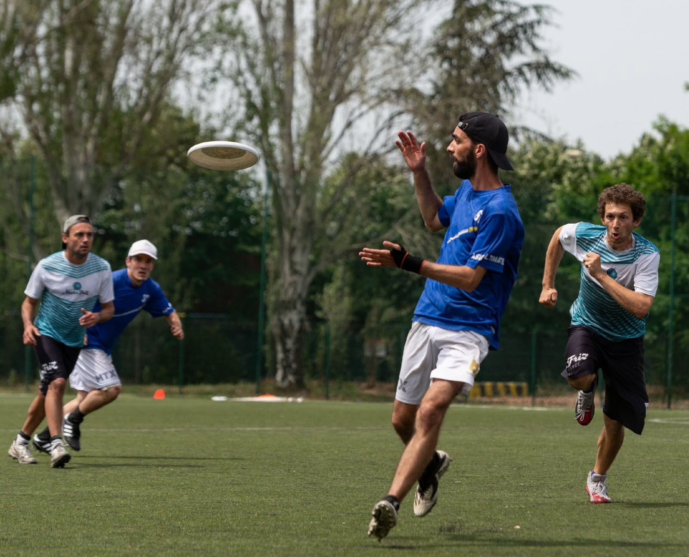

L'Ultimate est un sport collectif qui se joue à 5 contre 5 ou 7 contre 7.
L'objectif est de se faire des passes sans marcher entre ses différents coéquipiers pour arriver jusqu'à la zone d'en-but pour marquer un point.
Ce sport se joue en différentes catégories : mixte (autant de femmes que d'hommes sur le terrain), open (pas de sexe exigé, souvent destiné uniquement aux hommes) et féminin (uniquement les femmes)
L'ultimate se joue en intérieur sur les mêmes dimensions de terrain qu'un terrain de handball, mais aussi en extérieur (la taille du terrain varie selon la catégorie et le nombre de joueurs)
Le respect des règles se fait par auto-arbitrage. C'est-à-dire qu'il n'y a pas d'arbitre sur le terrain et que les fautes sont signalées par un des joueurs par des signes. La faute peut être acceptée ou contestée.
Voici certains appels qui peuvent être fait durant un match par les joueurs :
| Appel | Signification |
|---|---|
| Faute | Contact entre deux joueurs |
| Pick | Le défenseur est gêné par d'autres joueurs lorsque qu'il suit son joueur qui attaque |
| Out | L'attaquant catch (attrape) le disque hors des limites du terrain |
| Stall Out (time) | Le porteur du disque ne lance pas le disque avant la fin du compte du défenseur (8s en intérieur et 10s en extérieur) |
| Double team | Deux joueurs se situent à moins de 3m du porteur du disque, un seul joueur est autorisé à défendre sur le porteur à la fois |
| Strip | Le défenseur "arrache" le disque des mains de l'attaquant alors qu'il l'a déja contrôlé |
Pour en savoir plus sur le règlement et en voir plus, dirigez vous vers le site de la fédération
Pour faire respecter les règles, un prix de l'équipe la plus fair-play est remis à la fin de chaque compétitions.
En savoir plus sur l'Ultilmate
Retourner à la page d'accueil